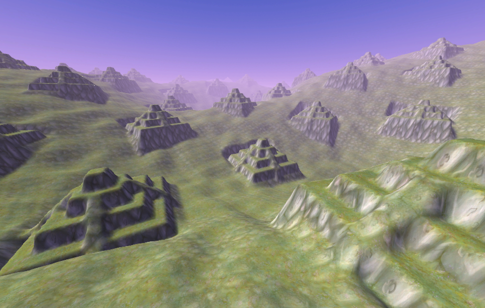
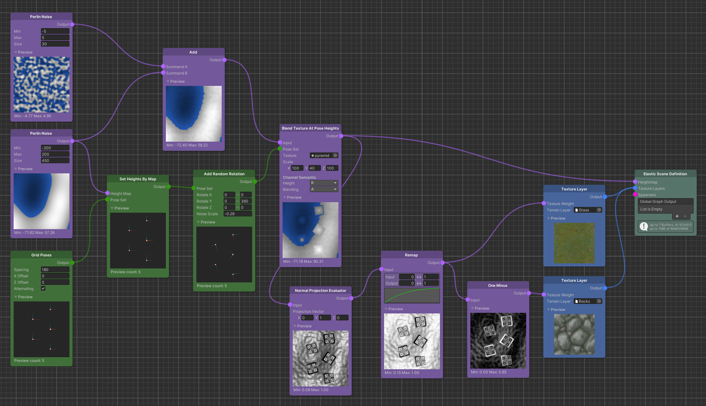
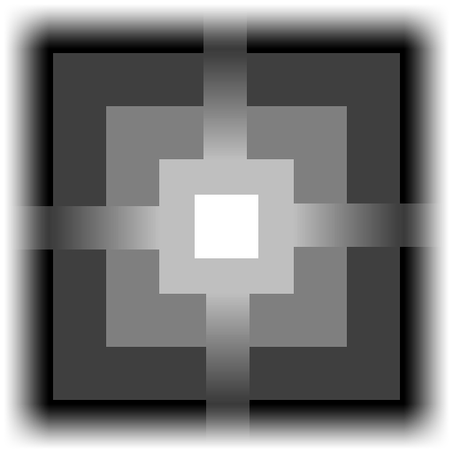

Texture Based Maps
Textures are a straight forward way to add sample based predictable structures into Maps. For example, a particular mountain shape can be stamped into the height map of a terrain or a particular noise texture can be used as a replacement for any Perlin Noise to achieve distinctive results. Since textures are created with 3rd party tools, they are a powerful way to connect existing elaborated workflows to the Elastic SDK's world creation pipeline.
The Elastic SDK provides two texture nodes. One that repeats the texture infinitely called Constant Texture and one that stamps a texture based on the positions and rotations of a Pose Set called Blend Texture At Pose Heights.
RGBA to Float Conversion
For both nodes, the channel conversion from the texture's RGBA color space into the Map's float values can be determined:
| Name | Description |
|---|---|
| R | The red channel of the texture. |
| G | The green channel of the texture. |
| B | The blue channel of the texture. |
| A | The alpha channel of the texture. |
| RGBAverage | The average of red, green and blue computed as (r+g+b)/3. |
| RGBToLuminance | The brightness according to the color perception of the human eye. |
Tiling Textures
Using the Constant Texture node, all output pixels are set according to the selected channel conversion. The texture is infinitely repeating (tiling) and therefore covers the entire Map. The UV space determines whether the texture is fixed or moves with the origin geo coordinate of the Map. The scale parameter defines the size of the texture depending on the chosen UV space.
Tip
The World UV space is far more common than the GenerationOrigin UV space. The latter causes popup effects with every ElasticSceneGenerator update because of its jumping offset to the generation origin and should not be used if connected to the moving player transform.
Similar to Perlin Noise, the output can directly be used as a height map or can be incorporated into Maps flagged as Modifiers. Most commonly, the textured Map is added, multiplied or lerped with the output of an existing arrangement of nodes. A Remap node can be employed to widen the range or obtain negative Map values.
Stamping Textures
A Blend Texture At Pose Heights node stamps a given texture at every Pose. As described in earlier chapters, poses can either be synthetically created via Pose Source nodes or be obtained from OpenStreetMap in order to mark particular places of interest.
 
Maps define the environment around the objects. A clever scene generation strategy is to utilize Pose positions for both Maps and Spawners: If an object needs to be placed on top of a mountain, a mountain is placed at the exact same spot as the object. Likewise, if an object requires flat ground underneath, the Map needs to incorporate the space around the Pose before the object gets spawned at that Pose's position. The same counts for the rotation of Poses: The rotation of a foundation texture that is blended into the terrain can match the rotation of an object spawned with the same Pose.
The BlendTextureAtPoseHeights node can flatten and elevate the ground precisely to the height obtained from a Pose while smoothly fading into the surrounding landscape by using its blending capabilities.
